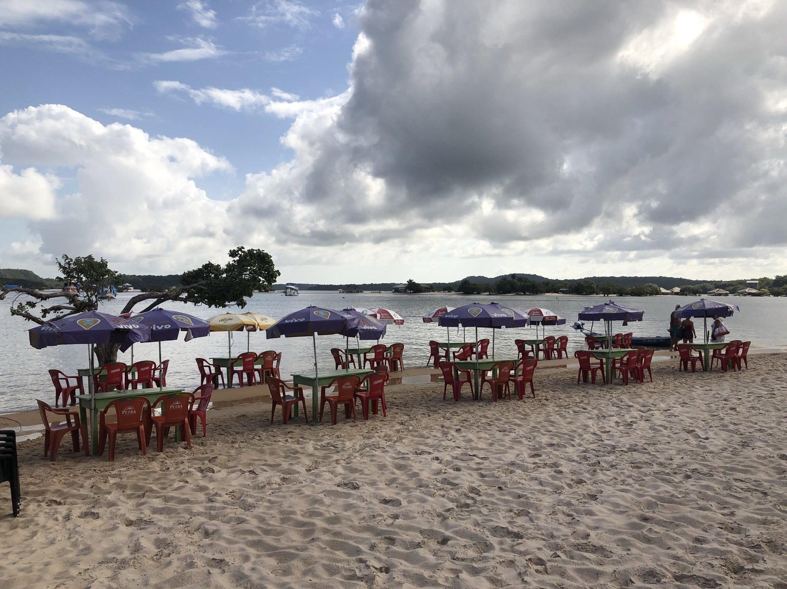

Informação com origem
Existência, localização, canais de contato e dados dos serviços fazem parte do processo previsto de conferência.
Praias, sabores e encontros que fazem a viagem valer a pena. Descubra a região com informação local e conexão com quem vive aqui.
Da primeira pesquisa à vontade de ficar mais um dia.
Um guia para reunir o que você procura e apresentar o que você ainda nem sabia que queria conhecer.
Explore lugares e temas da região nesta prévia do Guia Tapajós.

O Tapajós muda ao longo do ano. Entender o ciclo das águas ajuda você a escolher quando ir e o que faz sentido conhecer.
O ciclo varia a cada ano. Confirme condições e acesso com profissionais locais antes de sair.
O Guia Tapajós nasce com uma proposta: organizar informações locais e conferir dados conforme cada tipo de serviço.
Verificação é conferência dentro dos critérios da plataforma. Não representa garantia absoluta de segurança ou ausência de riscos.
Existência, localização, canais de contato e dados dos serviços fazem parte do processo previsto de conferência.
Passeios de barco recebem atenção documental específica, considerando embarcação, capacidade e exigências aplicáveis.
O escopo e a data de cada conferência devem acompanhar a informação. Documento vencido exige nova regularização e revisão.
A proposta do Guia é simples: você descobre, consulta e conversa com quem faz acontecer.
Encontre lugares, passeios e serviços que combinam com seu jeito de viajar.
Consulte localização, formas de acesso, orientações e contexto da época da viagem.
Na plataforma, o contato será direto pelo WhatsApp para confirmar disponibilidade e condições.
Entenda o Guia e descubra como ele pode fazer parte do seu planejamento.
Encontre seu próximo lugar favorito — e as pessoas que fazem dele uma experiência.
Quero descobrir o Tapajós